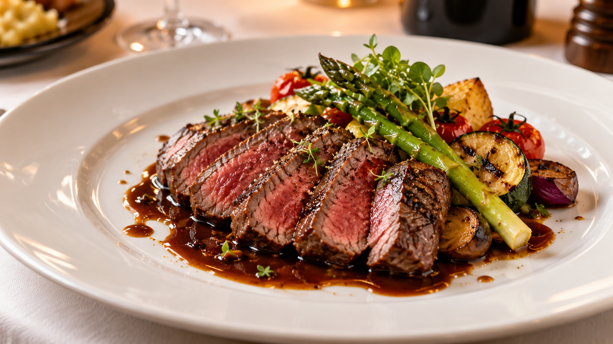

Lunch
イタリアンの技法を大切に、旬の食材の魅力を引き出した一皿をお届けします。近隣の菜園で採れた新鮮な野菜や、国内各地から厳選した食材を使用し、素材本来のうまみや香りを丁寧に引き出しています。季節ごとに表情を変える味わいとともに、窓いっぱいに広がる東京の景色を眺めながら、ゆったりとしたひとときをお楽しみください。
Lunch A 牛肉のメインコース料理 ¥8,000
Lunch B 魚のメインコース料理 ¥8,400
日替わりランチ（メイン料理、デザート、コーヒー） ¥7,800
イタリアンの技法を大切に、旬の食材の魅力を引き出した一皿をお届けします。近隣の菜園で採れた新鮮な野菜や、国内各地から厳選した食材を使用し、素材本来のうまみや香りを丁寧に引き出しています。季節ごとに表情を変える味わいとともに、窓いっぱいに広がる東京の景色を眺めながら、ゆったりとしたひとときをお楽しみください。
Lunch A 牛肉のメインコース料理 ¥8,000
Lunch B 魚のメインコース料理 ¥8,400
日替わりランチ（メイン料理、デザート、コーヒー） ¥7,800
